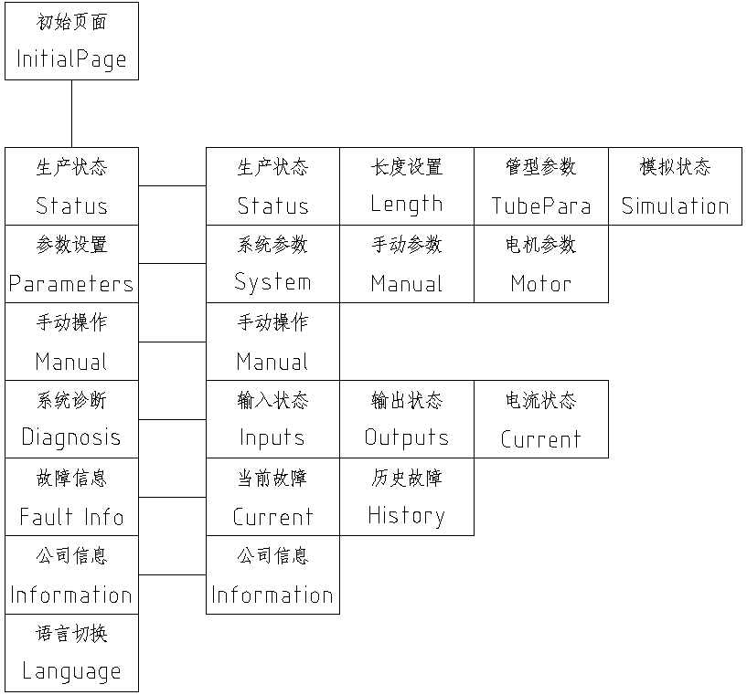
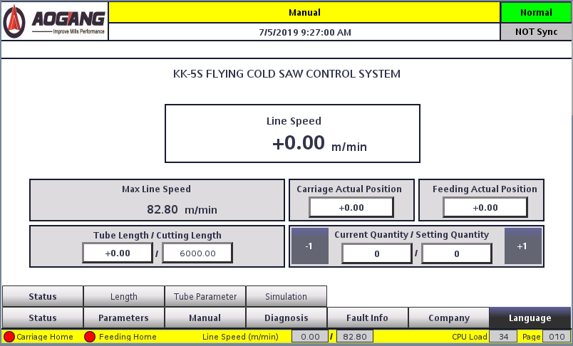
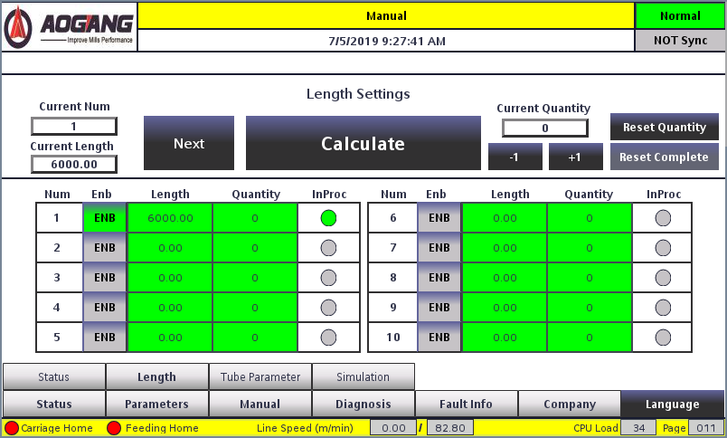
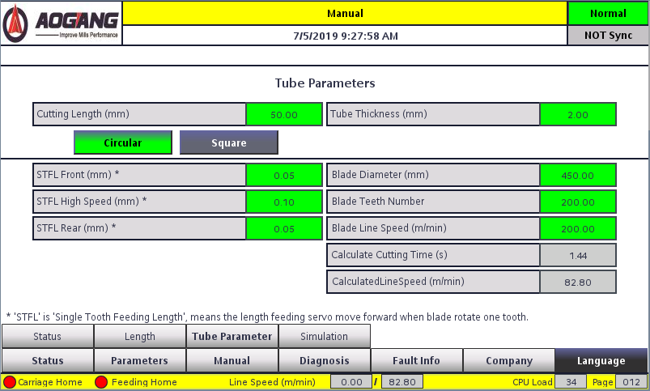
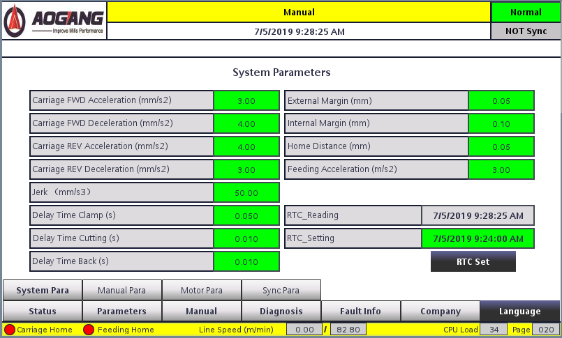
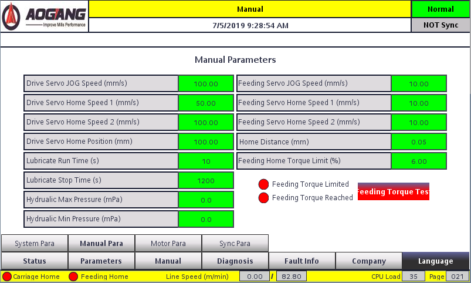
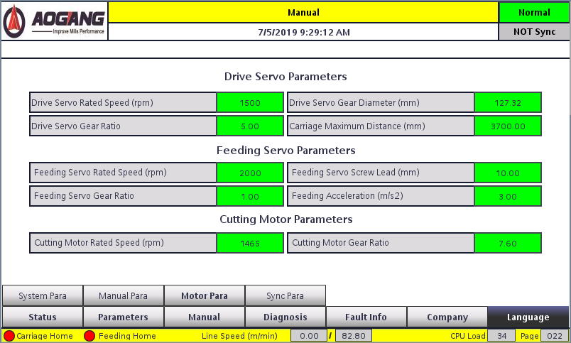
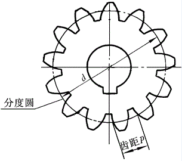
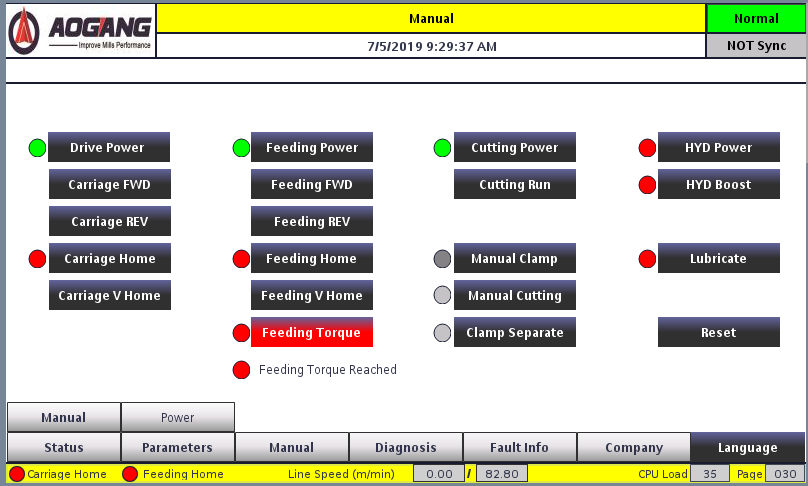

Parameter description
The KK-5S touchscreen is the primary station for production settings and status. This chapter maps every page and documents each parameter.
1.1 Screen overview
On each screen there are two rows of switching buttons at the bottom. The bottom row is primary navigation and is shown on every page. The top row is secondary navigation and appears only for the active primary page.


- Production Status — Production Status, Length Settings, Pipe Type Parameters, and Simulation Status. Daily length, quantity, and material parameters live here.
- System Settings — System Parameters, Manual Parameters, and Motor Parameters (plus Sync Parameters on the HMI).
- Manual Operation — jog, home, clamp, cut, and axis power buttons.
- System Diagnostics — inputs, outputs, and current.
- Alarm Information — current alarms and historical alarms.
- Company Information — manufacturer contact details.
- Language — Chinese / English.
1.2.1 Main page
The main page is the production-status view shown in Figure 1-2. Values above the divider are also visible from other windows.
| Parameter | Description | Unit | Set | Default |
|---|---|---|---|---|
| Production line speed | Current mill speed in automatic mode; live display | m/min | ○ | — |
| Maximum line speed | Maximum allowed speed for the current parameters | m/min | ○ | — |
| Current material length | Distance this piece has already advanced | mm | ○ | — |
| Current cut length | Cut-off length of the active job (see §3.9) | mm | ○ | — |
| Current saw-carriage position | Carriage position relative to origin | mm | ○ | — |
| Current feed position | Feed position relative to origin | mm | ○ | — |
| Quantity produced | Pieces already produced on the current order; ±1 for tracking | pieces | ○ | — |
| Set production quantity | Target quantity of the current schedule | pieces | ○ | — |
When operating in automatic mode, keep mill speed at or below the displayed maximum line speed.
1.2.2 Length scheduling page

| Parameter | Description | Unit | Set | Default |
|---|---|---|---|---|
| Orders 1–10 set length | Cut length for each order. Range 0–104,857.5. Selected order length must not be 0 | mm | ● | 6000 |
| Orders 1–10 set quantity | Pieces for each order. Quantity 0 means unlimited | pieces | ● | 6666 |
| Current production order number | Currently selected order | — | ○ | — |
| Current production length | Length of the selected order | mm | ○ | — |
| Current quantity | Pieces produced so far on the selected order | pieces | ○ | — |
1.2.3 Tube type parameters

| Parameter | Description | Unit | Set | Default |
|---|---|---|---|---|
| Feed distance | Feed-axis travel during the cut. Round tube: enter diameter. Square / special: equivalent feed for a full cut | mm | ● | 32 |
| Material wall thickness | Shown when Round Tube is selected; sets slow-feed zones at both walls | mm | ● | 2 |
| Slow-speed % first segment | Square / special only: slow-feed zone at the start of the cut (typical 5–10%) | % | ● | 10 |
| Slow-speed % final segment | Square / special only: slow-feed zone at the end of the cut (typical 20–45%) | % | ● | 20 |
| Tube type | Round, square, or special-shaped | — | ● | — |
| Feed per tooth, initial | Low-speed tooth feed at the start of the cut | mm | ● | 0.04 |
| Feed per tooth, high-speed | Tooth feed in the high-speed portion of the cut | mm | ● | 0.08 |
| Feed per tooth, final | Low-speed tooth feed at the end of the cut | mm | ● | 0.04 |
| Saw blade linear speed | Peripheral speed at the tooth tip. Must satisfy: linear speed × 1000 × reduction / (diameter × π) < saw-motor max speed | m/min | ● | 200 |
| Number of saw-blade teeth | Actual tooth count. Wrong value shortens blade life or blocks the cycle | teeth | ● | 200 |
| Saw blade diameter | Actual diameter. Re-measure after regrinding | mm | ● | 350 |
| Recommended cutting time | Calculated from current tube and blade data; a conservative blade-protection reference | s | ○ | — |
| Maximum production speed | Maximum line speed at current parameters | m/min | ○ | — |
Wall thickness vs. slow-speed percentages
During feed, zones that need more cutting force (tube walls) run at the low-speed tooth feed to protect the blade; after those zones the axis returns to high-speed tooth feed. Too large a slow zone costs cycle time; too small a zone can shatter the blade. For square tube, wall thickness and exit angle both change the percentages — inspect the cutting curve after material identification and trim the values.
Feed per tooth (STFL)
STFL is the feed-axis move per one tooth of blade rotation. Start from the blade manufacturer’s chart, then trim to the cut. Too high damages the blade; too low only slows the mill.
1.2.4 System parameters

| Parameter | Description | Unit | Set | Default |
|---|---|---|---|---|
| Saw-car forward acceleration | Acceleration on the forward (tracking) segment | m/s² | ● | 3 |
| Saw-car forward deceleration | Deceleration on the forward segment | m/s² | ● | 4 |
| Saw-car return acceleration | Acceleration on the return segment | m/s² | ● | 4 |
| Saw-car return deceleration | Deceleration on the return segment | m/s² | ● | 3 |
| Saw-car jerk | Jerk of the drive feed motor on forward and return strokes | m/s³ | ● | 50 |
| Clamping delay | After the carriage reaches the sync zone, wait this long before outputting clamp | s | ● | 0.05 |
| Cut-off delay | Time allotted for the clamp to actuate after the clamp command | s | ● | 0.01 |
| Return delay | After the blade is back at origin and unclamp is output, wait this long before decelerating the carriage | s | ● | 0.01 |
| Slow-speed allowance (outer) | Allowance outside the wall-thickness slow zone (covers mechanical error) | mm | ● | 1 (HMI example 0.05) |
| Slow-speed allowance (inner) | Allowance inside the wall-thickness slow zone | mm | ● | 1 (HMI example 0.10) |
| Distance to feed origin | After feed-home contact, the blade retracts this distance | mm | ● | 5 |
| Feed acceleration | Acceleration of the feed servo | m/s² | ● | 2 |
| Real-time clock | Controller clock set / read | — | ● | — |
Clamping delay exists because the carriage overshoots slightly when it enters the sync zone. Clamping during that overshoot can desynchronize the cut. Do not set the delay larger than needed — it reduces maximum line speed.
1.2.5 Manual parameters

| Parameter | Description | Unit | Set | Default |
|---|---|---|---|---|
| Driven servo jog speed | Carriage speed during manual forward/reverse | mm/s | ● | 100 |
| Drive servo home speed 1 | Speed while seeking the rear limit during drag-home | mm/s | ● | 100 (table 50) |
| Drive servo home speed 2 | Speed of the forward move after the rear limit is found | mm/s | ● | 100 |
| Drag servo home distance | Distance the carriage travels forward after the rear limit | mm | ● | 50 |
| Lubrication pump run time | On-time of each lube cycle | s | ● | 15 |
| Lubrication pump stop time | Off interval between lube cycles | s | ● | 1200 |
| Hydraulic station pressure limit (max) | Hydraulic high-pressure limit when a hydraulic clamp is fitted | MPa | ● | 12 |
| Hydraulic station pressure limit (min) | Hydraulic low-pressure limit | MPa | ● | 15 |
| Feed servo jog speed | Feed-axis speed in manual jog | mm/s | ● | 10 |
| Feed servo home speed 1 | Speed retracting to the feed rear limit during feed-home | mm/s | ● | 10 |
| Feed servo home speed 2 | Speed advancing to find the material after the rear limit | mm/s | ● | 5 |
| Feed home distance | Retract distance after the blade contacts the material | mm | ● | 5 |
| Feed servo home torque limit | Torque used to drive into the material during feed-home. Typical 5–15% | % | ● | 5 |
If home torque is high but the motor still cannot drive the load, the feed screw may be dry. Check that lubrication lines are open before raising torque further — excess torque can damage the strip and the blade.
1.2.6 Motor parameters

| Parameter | Description | Unit | Set | Default |
|---|---|---|---|---|
| Drive motor rated speed | From the drive servo nameplate | rpm | ● | 2000 |
| Drive gear diameter | Pitch-circle diameter of the load-end drive gear | mm | ● | 127.32 |
| Drive reduction ratio | Drive-shaft reducer ratio from its nameplate | — | ● | 6 |
| Maximum travel of the saw car | Maximum effective carriage stroke on the rack | mm | ● | 2700 |
| Feed servo rated speed | From the feed servo nameplate | rpm | ● | 2000 |
| Feed screw pitch | Nut travel per revolution of the lead screw | mm | ● | 10 |
| Feed reduction ratio | Feed gearbox ratio; enter 1 if there is no gearbox | — | ● | 1 |
| Feed origin distance | Retract after feed-home contact (same idea as §1.2.4 / §1.2.5) | mm | ● | 5 |
| Saw motor speed | Rated speed from the sawing-motor nameplate | rpm | ● | 1465 |
| Sawing reduction ratio | Saw-shaft gearbox ratio from its nameplate | — | ● | 9.3 |
| Maximum frequency of sawing inverter | Upper limit of the saw inverter | Hz | ● | 60 |

Measuring maximum saw-carriage travel
- Enter the correct drive gear diameter and reduction ratio, then power the machine again.
- Perform Return to Origin.
- After homing, jog the carriage forward until it reaches the front limit switch.
- Read the current saw-carriage position on the main screen. Reduce that value slightly and enter it as maximum travel.
1.2.7 Manual operation screen

This page duplicates the control-panel actions for drive, feed, cutting, clamp, hydraulic, lubrication, and reset. Status lamps next to each button show enable/home/run state. Use it together with the physical knobs; mode still comes from the panel selector.